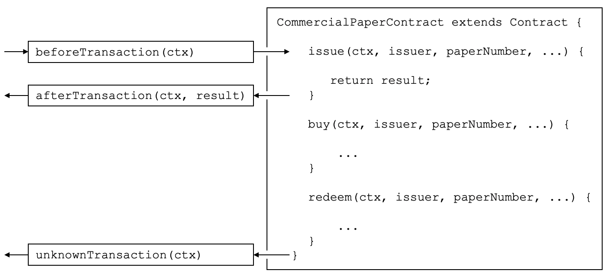

hyperledger-fabricdocs
Audience: Architects, Application and smart contract developers
Transaction handlers allow smart contract developers to define common processing at key points during the interaction between an application and a smart contract. Transaction handlers are optional but, if defined, they will receive control before or after every transaction in a smart contract is invoked. There is also a specific handler which receives control when a request is made to invoke a transaction not defined in a smart contract.
Here’s an example of transaction handlers for the commercial paper smart contract sample:

Before, After and Unknown transaction handlers. In this example, beforeTransaction() is called before the issue, buy and redeem transactions. afterTransaction() is called after the issue, buy and redeem transactions. unknownTransaction() is only called if a request is made to invoke a transaction not defined in the smart contract. (The diagram is simplified by not repeating beforeTransaction and afterTransaction boxes for each transaction.)
beforeTransaction()
afterTransaction()
unknownTransaction()
beforeTransaction
afterTransaction
There are three types of transaction handlers which cover different aspects of the interaction between an application and a smart contract:
Before handler: is called before every smart contract transaction is invoked. The handler will usually modify the transaction context to be used by the transaction. The handler has access to the full range of Fabric APIs; for example, it can issue getState() and putState().
getState()
putState()
After handler: is called after every smart contract transaction is invoked. The handler will usually perform post-processing common to all transactions, and also has full access to the Fabric APIs.
Unknown handler: is called if an attempt is made to invoke a transaction that is not defined in a smart contract. Typically, the handler will record the failure for subsequent processing by an administrator. The handler has full access to the Fabric APIs.
Defining a transaction handler is optional; a smart contract will perform correctly without handlers being defined. A smart contract can define at most one handler of each type.
Transaction handlers are added to the smart contract as methods with well defined names. Here’s an example which adds a handler of each type:
CommercialPaperContract extends Contract { ... async beforeTransaction(ctx) { // Write the transaction ID as an informational to the console console.info(ctx.stub.getTxID()); }; async afterTransaction(ctx, result) { // This handler interacts with the ledger ctx.stub.cpList.putState(...); }; async unknownTransaction(ctx) { // This handler throws an exception throw new Error('Unknown transaction function'); }; }
The form of a transaction handler definition is the similar for all handler types, but notice how the afterTransaction(ctx, result) also receives any result returned by the transaction. The API documentation shows you the exact form of these handlers.
afterTransaction(ctx, result)
Once a handler has been added to the smart contract, it will be invoked during transaction processing. During processing, the handler receives ctx, the transaction context, performs some processing, and returns control as it completes. Processing continues as follows:
ctx
Before handler: If the handler completes successfully, the transaction is called with the updated context. If the handler throws an exception, then the transaction is not called and the smart contract fails with the exception error message.
After handler: If the handler completes successfully, then the smart contract completes as determined by the invoked transaction. If the handler throws an exception, then the transaction fails with the exception error message.
Unknown handler: The handler should complete by throwing an exception with the required error message. If an Unknown handler is not specified, or an exception is not thrown by it, there is sensible default processing; the smart contract will fail with an unknown transaction error message.
If the handler requires access to the function and parameters, then it is easy to do this:
async beforeTransaction(ctx) { // Retrieve details of the transaction let txnDetails = ctx.stub.getFunctionAndParameters(); console.info(`Calling function: ${txnDetails.fcn} `); console.info(util.format(`Function arguments : %j ${stub.getArgs()} ``); }
See how this handler uses the utility API getFunctionAndParameters via the transaction context.
getFunctionAndParameters
It is only possible to define at most one handler of each type for a smart contract. If a smart contract needs to invoke multiple functions during before, after or unknown handling, it should coordinate this from within the appropriate function.